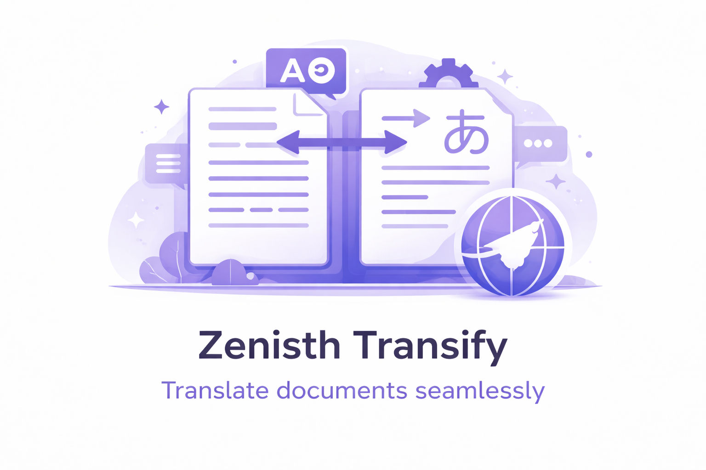
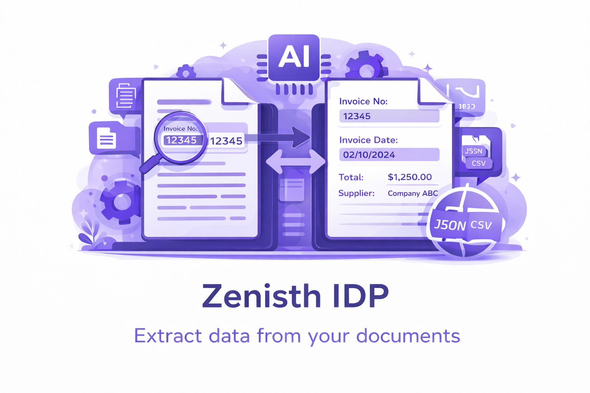
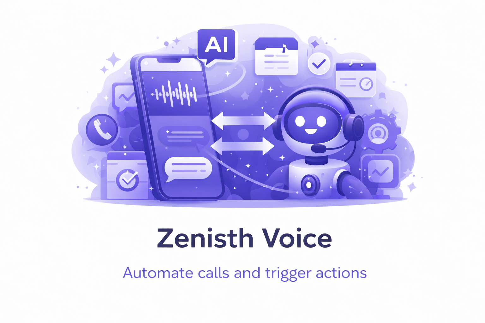

I’m a Product Designer working on AI-driven SaaS platforms and digital products. My work focuses on simplifying complex workflows, structuring scalable systems, and making advanced technology usable for real teams.
I don’t just design screens. I design how products behave, how decisions flow, and how users build trust with systems over time.
My work includes defining system structure, designing end-to-end workflows, building reusable components, and collaborating closely with engineering to bring products into production.

>
>
>I design platform workflows, AI tools, and conversion-focused product experiences. My work spans enterprise SaaS systems, mobile product concepts, and real production tools used to automate business operations.
Designing platform workflows and shared systems across multiple AI tools
Designed core workflows and system patterns for AI-powered tools including document processing, translation, voice agents, and workflow automation. Defined platform structure, reusable components, and interaction models to ensure clarity, scalability, and predictable behavior across the ecosystem.
-
Focused on simplifying complex operations such as document ingestion, extraction flows, and credit-based usage, helping transform technical capabilities into usable product experiences.
Designing platform workflows and shared systems across multiple AI tools
Led the redesign of Play Store screenshots for a fintech loyalty product focused on rent payments and rewards. Structured the screenshot narrative to clearly communicate value, improve trust perception, and reduce user hesitation during install decisions.
-
Applied conversion-focused design principles, including clear value sequencing, visual hierarchy, and trust-building messaging.
Designed dashboards and workflow interfaces for administrative and operational use
Worked on dashboard interfaces and workflow screens for internal platforms. Focused on improving structure, usability, and information clarity to support efficient task completion.
-
Designed layouts, interaction patterns, and interface components aligned with real operational needs.
Worked on website structure, UI improvements, and front-end implementation
Contributed to website interface improvements and layout structure. Supported front-end implementation and helped refine user flows and visual consistency across pages.
-
This role strengthened my understanding of implementation constraints and how design translates into production.
I design workflows that turn complex AI capabilities into clear, usable product experiences. My focus is on document processing, automation, and enterprise tools where users depend on accuracy, speed, and predictability.
I build design systems that make products faster to build, easier to maintain, and consistent across features. Using tokens, reusable components, and clear interaction patterns, I create foundations that support long-term product growth.
I structure complex platform logic into intuitive user journeys. Whether it is document extraction, automation flows, or multi-step configurations, I focus on making each step understandable and predictable.
I start by understanding the real operational problem, not just the interface request. This helps ensure the solution addresses the root issue, not just the surface symptoms.
I work closely with engineers and product stakeholders throughout the design process. This helps ensure designs are practical, technically feasible, and aligned with product goals from the beginning.
I translate product decisions into clear flows, structured layouts, and documentation that teams can execute confidently. My focus is on removing ambiguity so implementation stays aligned with the intended experience.
I continuously refine designs based on feedback, testing, and real-world constraints. Each iteration improves usability, removes friction, and strengthens the overall product experience.